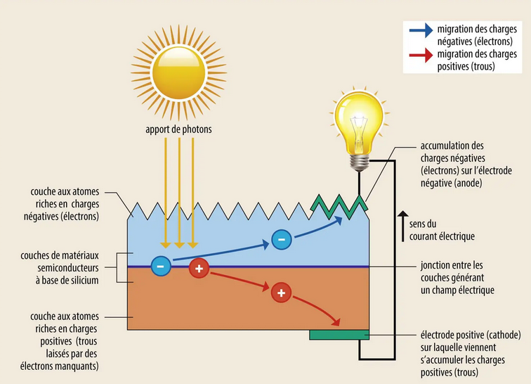

Situation : alimenter en énergie électrique un local vélos + trottinettes du lycée grâce à des panneaux photovoltaïques.
Télécharger les documents nécessaires :

Q1. Identifier les formes d'énergie mises en jeu dans un panneau photovoltaïque.
Q2. Expliquer pourquoi l'énergie solaire est qualifiée d'énergie renouvelable.
Q3. Dans la Séquence F, identifier les systèmes dont la chaîne d'énergie est comparable à celle du panneau PV.
Q1. Conversion de l'énergie lumineuse (photons) en énergie électrique (électrons dans le semi-conducteur), parfois ensuite en énergie mécanique.
Q2. Le Soleil est une source inépuisable à l'échelle humaine ; son rayonnement se renouvelle naturellement.
Q3. Même logique de chaîne que le VAE ou la voiture électrique : source → conversion PV → distribution → actionneur.
Tracer les caractéristiques I = f(U) et P = f(U) d'un panneau solaire polycristallin et repérer son point de fonctionnement optimal (MPP).